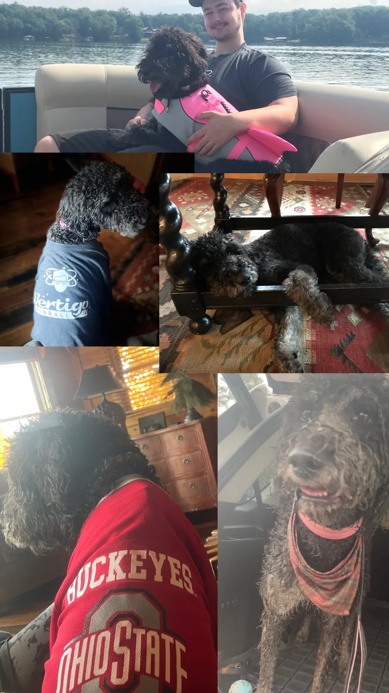

Jack McGuire
Ph.D. Student in Physics, Astronomy Concentration · University of Wyoming
Research directions
What I work on
Chemical Records of Binary Mass Transfer
Barium dwarfs, chemically peculiar stars, s-process enrichment, and the chemical legacy left behind when an AGB companion sheds its envelope onto a main-sequence star.
Barium dwarfs & post-AGB transfer →
White Dwarfs, Post-Interaction Binaries, and Low-Mass Stars
White-dwarf–main-sequence binaries, orbital separation constraints, hidden compact companions, CHARA Array interferometry, directly measured angular diameters, nearby M-dwarf binaries, and the radius-inflation problem.
GJ 166 C, 40 Eridani, and CHARA interferometry →
Astronomical Data and Time-Domain Systems
The Cowboy Transient Alert System, catalog cross-matching, provenance-preserving data pipelines, and scientific software for transient astronomy.
Go to the CTAS page →
Exoplanet Evidence and Interactive Catalogs
WorldsIndex, the ExoNexus provenance engine, source-native exoplanet measurements, public archive products, detection-method education, and reproducible comparison tools.
Explore WorldsIndex →
Physics qualifying-exam study
QualQuest
A flexible, game-like campaign through the undergraduate physics material assigned for the exam. Choose a subject, Freshman or Junior/Senior level, and a 15-, 30-, or 60-minute mission—there is no daily quota to fall behind on.
- 7,936study questions
- 77/77assigned chapters
- 4exam subjects
New campaign
Start with any subject or session length.Selected work
A few things worth reading
-
Broad-band Monitoring of 797 Montana
Bentz, M. C.; Alahakone, R.; Azoulay, L.; Burns-Kaurin, E.; Chaturvedi, A. S.; Davis, M.; Kimani-Stewart, K.; Markham, M.; McGuire, J. P.; McMullan, E.; Patel, M.; Binu Raj, M.; Sankey, D.; Wilson, A. A.-L.; Zdanky, K. (2025). Minor Planet Bulletin, 52(3), 207–208.
Refereed publication. A four-night campaign at Hard Labor Creek Observatory gave a rotation period of 4.545 ± 0.001 hr for this main-belt asteroid.
-
Enriched by Companions: A Literature Census of Barium Dwarfs
McGuire, J. P., et al.
Manuscript in preparation; planned submission to an American Astronomical Society journal in Fall 2026.
-
Finding Barium Dwarfs Among Established White-Dwarf Systems
Poster · Georgia State Undergraduate Research Conference, April 6, 2026.
Spectroscopic abundance-ratio measurements for five candidate barium dwarfs.
-
AGB Post-Mass-Transfer Spectroscopic Ratios as White-Dwarf Tracers
Poster · Georgia Regional Astronomy Meeting, Emory University, November 7–8, 2025.
Using surface chemistry to trace otherwise hidden white-dwarf companions.
Featured project
Cowboy Transient Alert System
CTAS
CTAS is a rights-aware system for reconciling supernova and multimessenger alerts with public follow-up evidence. It ingests public alerts from survey and community services, screens them against data-rights rules, adds catalog and host context, and keeps candidates, analyses and follow-up drafts in one reproducible research record.
I am designing and developing it as an astronomy software project: the scientific workflow, the data model, and the researcher-facing dashboard. It is deliberately review-oriented: it does not command telescopes, submit observations, or publish classifications.
Recent updates
What’s new
-
August 2026
Began Ph.D. studies in physics, astronomy concentration, at the University of Wyoming, and started work as a graduate teaching assistant.
-
Aug–Oct 2026
Selected for Hello SciCom’s Comedy Camp for Science, an eight-week program on communicating technical research through humor and storytelling.
-
June 2026
Became an American Physical Society Advocacy Champion.
-
May 2026
Graduated from Georgia State University with a B.S. in Physics.
-
April 2026
Presented the barium-dwarf poster at the Georgia State Undergraduate Research Conference.
Away from the telescope
The rest of it
I play guitar, cook more ambitiously than is strictly reasonable, and travel whenever the calendar allows it. I care a lot about science communication, because explaining why any of this matters is part of the job, not a side quest. And there is a dog named Buckeye who believes she is a person.
